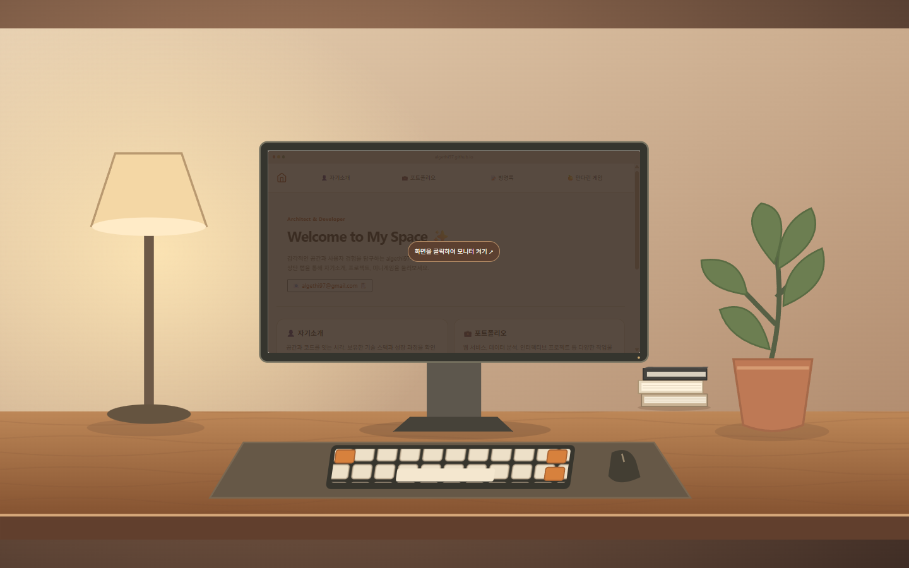
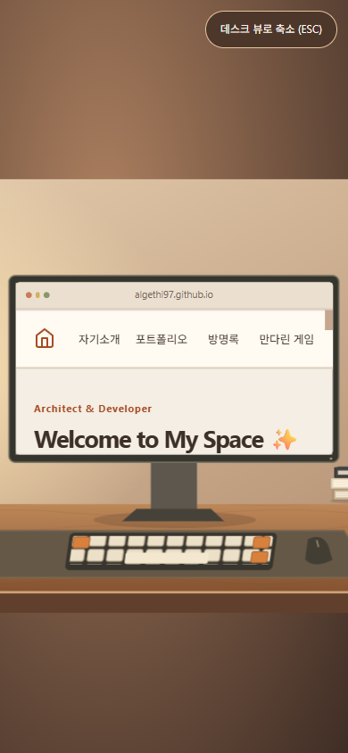
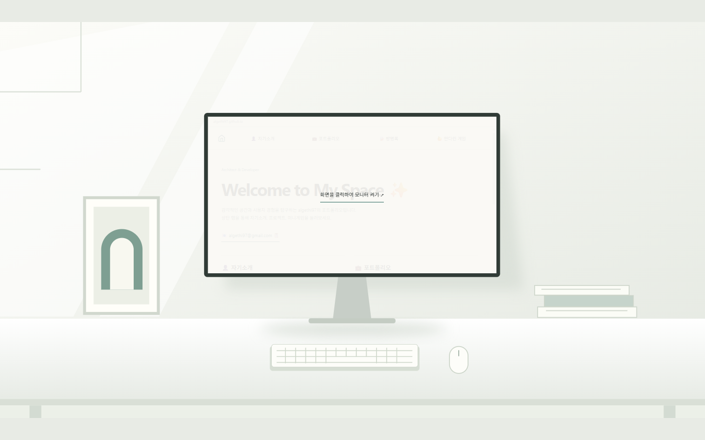
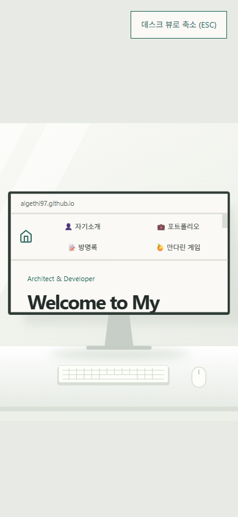
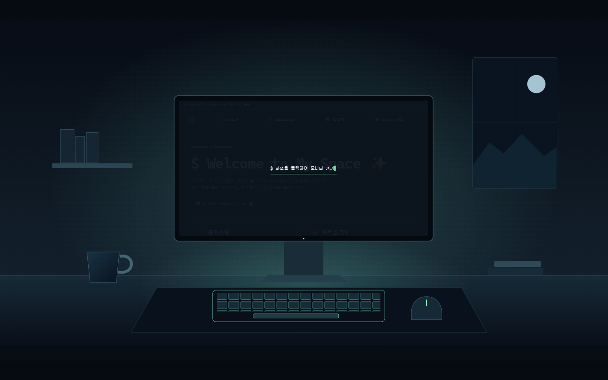
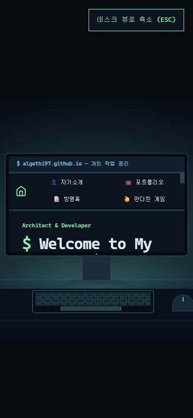

A. 데스크테리어 개선안
따뜻한 우드와 오렌지 포인트로 현재 공간의 분위기를 다듬었습니다.
-
#f4eee4 -
#3c3029 -
#a64c24


같은 소개와 프로젝트를 담은 세 가지 홈페이지 시안입니다. 홈에서 모니터를 클릭하면 확대되고, ESC나 축소 버튼으로 돌아옵니다.
따뜻한 우드와 오렌지 포인트로 현재 공간의 분위기를 다듬었습니다.
#f4eee4
#3c3029
#a64c24


밝은 종이색과 넓은 여백으로 프로젝트와 글에 집중합니다.
#faf9f5
#242c2a
#28665d


어두운 작업 공간과 고정폭 글꼴로 개발자 감성을 담았습니다.
#0c141e
#e0edf1
#8cf0b6


| 비교 항목 | A. 데스크테리어 | B. 에디토리얼 | C. 터미널 |
|---|---|---|---|
| 분위기 | 따뜻한 저녁 방, 우드와 둥근 카드. | 밝은 낮의 작업실, 종이와 얇은 구분선. | 야간 작업 공간, 민트 조명과 고정폭 글꼴. |
| 가독성 | 크림 바탕과 갈색 본문, 익숙한 카드 격자입니다. | 넓은 여백과 목록형 배치로 읽는 흐름을 만듭니다. | 어두운 바탕과 밝은 글자로 대비를 줍니다. |
| 확대 연출과의 어울림 | 현재 책상에서 모니터로 들어가는 흐름을 이어갑니다. | 정돈된 배경에서 잡지 지면 같은 본문으로 이어집니다. | 모니터의 빛과 명령창 형태의 본문이 연결됩니다. |
| 리모델링 때 바꿀 양 | [가설/임시] 적음. 현재 구조를 바탕으로 색과 간격을 조정합니다. | [가설/임시] 중간. 여백·제목·프로젝트 목록 배치를 조정합니다. | [가설/임시] 큼. 어두운 색 체계·글꼴·터미널 표현을 적용합니다. |